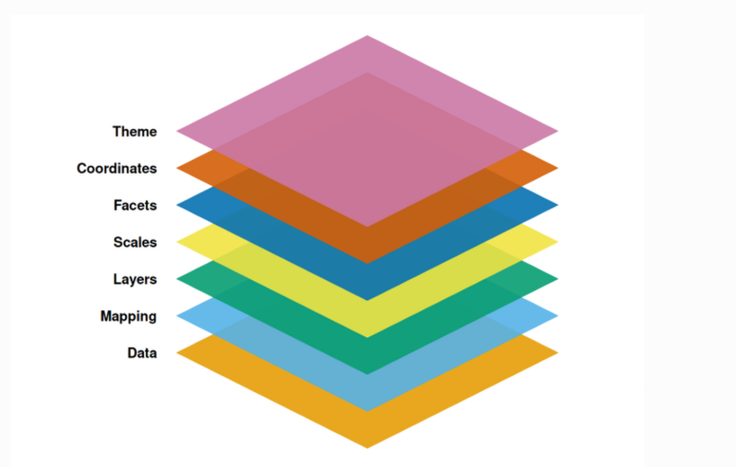
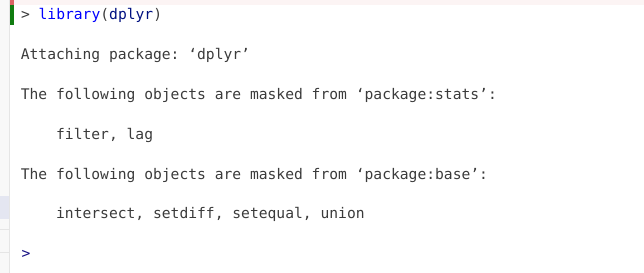
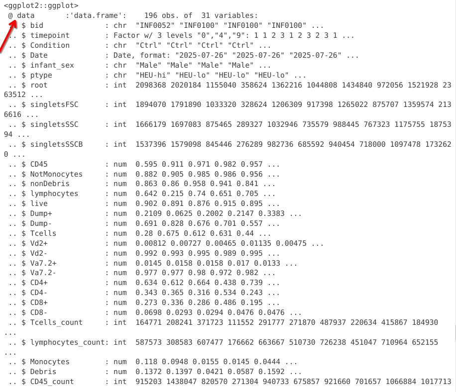
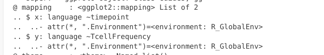
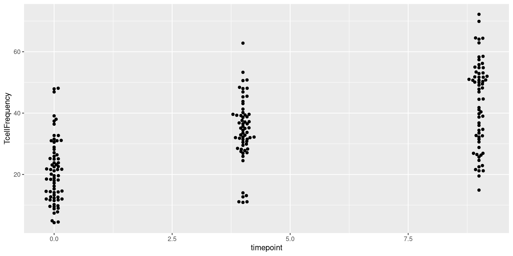
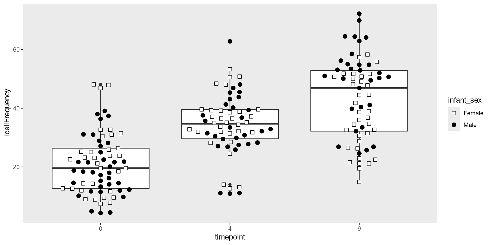
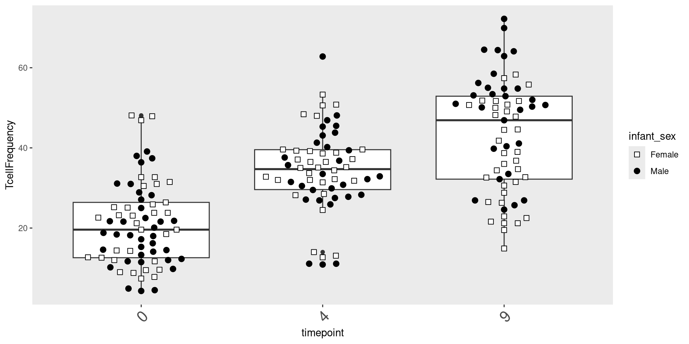
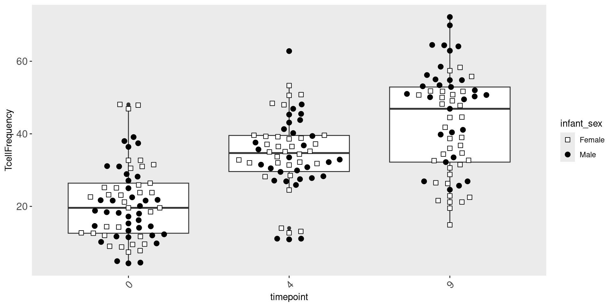

06 - Visualizing with ggplot2
2026-03-17


For the YouTube livestream schedule, see here
For screen-shot slides, click here
Background
.
Welcome back! This is the sixth week of Cytometry in R. At this point we are slowly but surely building out a solid foundation of general R knowledge, and learning how to apply it when it comes to working with cytometry data. This week, we will explore how to use the ggplot2 package to create plots. While these will include plots typical of cytometry, ggplot2 (and other packages that extend its reach) allow us to create a wide range of visualizations, ranging from statistical plots, to maps, to informational graphics you might see in a magazine.
.
One of ggplot2’s core strengths is its utilization of the grammar of graphics. Rather than treat each type of plot separately, if treats individual elements of a plot on its own (i.e. a layer), with the combined output creating the desired plot. This abstraction is what in turn permits the construction of such a wide array of plots from the same dataset by simply swapping out functions and arguments provided.

Walk Through
Housekeeping
As we do every week, on GitHub, sync your forked version of the CytometryInR course to bring in the most recent updates. Then within Positron, pull in those changes to your local computer.
For YouTube walkthrough of this process, click here
After setting up a “Week06” project folder, copy over the contents of “course/06_Visualizing/data” to that folder. This will hopefully prevent merge issues next week when attempting to pull in new course material. Once you have your new project folder organized, remember to commit and push your changes to GitHub to maintain remote version control.
If you encounter issues syncing due to the Take-Home Problem merge conflict, see this walkthrough. The updated homework submission protocol can be found here
Preparation
Masked Function Names
.
Since we will be using dplyr extensively throughout this session, let’s go ahead and attach it to our local environment via the library() function.
.
If dplyr was not already attached to your local environment, you might have gotten the following message

.
The reason behind this message is that both the dplyr and stats packages contain functions named “filter” and “lag”. Since stats is a base R package that is loaded by default, when dplyr is loaded via the library() call, both packages functions become active in your environment. Consequently, if you ran a line of code containing “filter” or “lag”, R would not know which packages function you intender to use in that line of code.
.
To avoid this, the base R stats and base package functions with identical names are masked (ie. hidden), so that the dplyr functions are instead prioritized when code is run.
Load Dataset
.
Lets continue by loading in the dataset we were working with during Week # 4.
#StorageLocation <- file.path("course", "06_Visualizing", "data") # When interactively writing the code
StorageLocation <- file.path("data") #When Quarto Rendering
TheCSV <- list.files(StorageLocation, pattern=".csv", full.names=TRUE)
Data <- read.csv(TheCSV, check.names=FALSE)
head(Data, 3) bid timepoint Condition Date infant_sex ptype root singletsFSC
1 INF0052 0 Ctrl 2025-07-26 Male HEU-hi 2098368 1894070
2 INF0100 0 Ctrl 2025-07-26 Male HEU-lo 2020184 1791890
3 INF0100 4 Ctrl 2025-07-26 Male HEU-lo 1155040 1033320
singletsSSC singletsSSCB CD45 NotMonocytes nonDebris lymphocytes
1 1666179 1537396 0.5952943 0.8820349 0.8627649 0.6420138
2 1697083 1579098 0.9106762 0.9052256 0.8602660 0.2145848
3 875465 845446 0.9705765 0.9845400 0.9578793 0.7403110
live Dump+ Dump- Tcells Vd2+ Vd2- Va7.2+
1 0.9020581 0.21090996 0.6911482 0.2804264 0.008120361 0.9918796 0.01448070
2 0.8908981 0.06252775 0.8283703 0.6748298 0.007265620 0.9927344 0.01577499
3 0.8757665 0.20023803 0.6755285 0.6119129 0.004651313 0.9953487 0.01579402
Va7.2- CD4+ CD4- CD8+ CD8- Tcells_count
1 0.9773989 0.6341164 0.3432825 0.2734826 0.06979990 164771
2 0.9769594 0.6119112 0.3650482 0.3357696 0.02927858 208241
3 0.9795547 0.6639621 0.3155925 0.2862104 0.02938209 371723
lymphocytes_count Monocytes Debris CD45_count
1 587573 0.11796509 0.13723513 915203
2 308583 0.09477437 0.13973396 1438047
3 607477 0.01545999 0.04212072 820570Identifying column value types
.
And let’s quickly evaluate the columns to determine what type of values each contains
'data.frame': 196 obs. of 31 variables:
$ bid : chr "INF0052" "INF0100" "INF0100" "INF0100" ...
$ timepoint : int 0 0 4 9 0 4 9 4 9 0 ...
$ Condition : chr "Ctrl" "Ctrl" "Ctrl" "Ctrl" ...
$ Date : chr "2025-07-26" "2025-07-26" "2025-07-26" "2025-07-26" ...
$ infant_sex : chr "Male" "Male" "Male" "Male" ...
$ ptype : chr "HEU-hi" "HEU-lo" "HEU-lo" "HEU-lo" ...
$ root : int 2098368 2020184 1155040 358624 1362216 1044808 1434840 972056 1521928 2363512 ...
$ singletsFSC : int 1894070 1791890 1033320 328624 1206309 917398 1265022 875707 1359574 2136616 ...
$ singletsSSC : int 1666179 1697083 875465 289327 1032946 735579 988445 767323 1175755 1875394 ...
$ singletsSSCB : int 1537396 1579098 845446 276289 982736 685592 940454 718000 1097478 1732620 ...
$ CD45 : num 0.595 0.911 0.971 0.982 0.957 ...
$ NotMonocytes : num 0.882 0.905 0.985 0.986 0.956 ...
$ nonDebris : num 0.863 0.86 0.958 0.941 0.841 ...
$ lymphocytes : num 0.642 0.215 0.74 0.651 0.705 ...
$ live : num 0.902 0.891 0.876 0.915 0.895 ...
$ Dump+ : num 0.2109 0.0625 0.2002 0.2147 0.3383 ...
$ Dump- : num 0.691 0.828 0.676 0.701 0.557 ...
$ Tcells : num 0.28 0.675 0.612 0.631 0.44 ...
$ Vd2+ : num 0.00812 0.00727 0.00465 0.01135 0.00475 ...
$ Vd2- : num 0.992 0.993 0.995 0.989 0.995 ...
$ Va7.2+ : num 0.0145 0.0158 0.0158 0.017 0.0133 ...
$ Va7.2- : num 0.977 0.977 0.98 0.972 0.982 ...
$ CD4+ : num 0.634 0.612 0.664 0.438 0.739 ...
$ CD4- : num 0.343 0.365 0.316 0.534 0.243 ...
$ CD8+ : num 0.273 0.336 0.286 0.486 0.195 ...
$ CD8- : num 0.0698 0.0293 0.0294 0.0476 0.0476 ...
$ Tcells_count : int 164771 208241 371723 111552 291777 271870 487937 220634 415867 184930 ...
$ lymphocytes_count: int 587573 308583 607477 176662 663667 510730 726238 451047 710964 652155 ...
$ Monocytes : num 0.118 0.0948 0.0155 0.0145 0.0444 ...
$ Debris : num 0.1372 0.1397 0.0421 0.0587 0.1592 ...
$ CD45_count : int 915203 1438047 820570 271304 940733 675857 921660 701657 1066884 1017713 ....
The type of values that a column contains are particularly important to be aware of when working with ggplot2 plots. For example, we can see that several columns contain character values:
'data.frame': 6 obs. of 5 variables:
$ bid : chr "INF0052" "INF0100" "INF0100" "INF0100" ...
$ Condition : chr "Ctrl" "Ctrl" "Ctrl" "Ctrl" ...
$ Date : chr "2025-07-26" "2025-07-26" "2025-07-26" "2025-07-26" ...
$ infant_sex: chr "Male" "Male" "Male" "Male" ...
$ ptype : chr "HEU-hi" "HEU-lo" "HEU-lo" "HEU-lo" ....
While spotting the character columns from the str() output, and isolating them using select() works, we could achieve something similar using the is.character() function in combination with the where() function, which the dplyr package actively borrows (ie. exports) from the tidyselect package.
'data.frame': 6 obs. of 5 variables:
$ bid : chr "INF0052" "INF0100" "INF0100" "INF0100" ...
$ Condition : chr "Ctrl" "Ctrl" "Ctrl" "Ctrl" ...
$ Date : chr "2025-07-26" "2025-07-26" "2025-07-26" "2025-07-26" ...
$ infant_sex: chr "Male" "Male" "Male" "Male" ...
$ ptype : chr "HEU-hi" "HEU-lo" "HEU-lo" "HEU-lo" ...We can switch out is.character() to identify columns containing other value types
'data.frame': 6 obs. of 26 variables:
$ timepoint : int 0 0 4 9 0 4
$ root : int 2098368 2020184 1155040 358624 1362216 1044808
$ singletsFSC : int 1894070 1791890 1033320 328624 1206309 917398
$ singletsSSC : int 1666179 1697083 875465 289327 1032946 735579
$ singletsSSCB : int 1537396 1579098 845446 276289 982736 685592
$ CD45 : num 0.595 0.911 0.971 0.982 0.957 ...
$ NotMonocytes : num 0.882 0.905 0.985 0.986 0.956 ...
$ nonDebris : num 0.863 0.86 0.958 0.941 0.841 ...
$ lymphocytes : num 0.642 0.215 0.74 0.651 0.705 ...
$ live : num 0.902 0.891 0.876 0.915 0.895 ...
$ Dump+ : num 0.2109 0.0625 0.2002 0.2147 0.3383 ...
$ Dump- : num 0.691 0.828 0.676 0.701 0.557 ...
$ Tcells : num 0.28 0.675 0.612 0.631 0.44 ...
$ Vd2+ : num 0.00812 0.00727 0.00465 0.01135 0.00475 ...
$ Vd2- : num 0.992 0.993 0.995 0.989 0.995 ...
$ Va7.2+ : num 0.0145 0.0158 0.0158 0.017 0.0133 ...
$ Va7.2- : num 0.977 0.977 0.98 0.972 0.982 ...
$ CD4+ : num 0.634 0.612 0.664 0.438 0.739 ...
$ CD4- : num 0.343 0.365 0.316 0.534 0.243 ...
$ CD8+ : num 0.273 0.336 0.286 0.486 0.195 ...
$ CD8- : num 0.0698 0.0293 0.0294 0.0476 0.0476 ...
$ Tcells_count : int 164771 208241 371723 111552 291777 271870
$ lymphocytes_count: int 587573 308583 607477 176662 663667 510730
$ Monocytes : num 0.118 0.0948 0.0155 0.0145 0.0444 ...
$ Debris : num 0.1372 0.1397 0.0421 0.0587 0.1592 ...
$ CD45_count : int 915203 1438047 820570 271304 940733 675857Reformatting Column Value Types
.
Looking at the str() output, we can spot that the Date column is currently showing as a character value:
.
Character values when plotting are generally treated as categorical factors. When plotted, these will arrange according to alphabetical order. In this particular case, this may not be an issue:
.
However, if year/month/day is formatted differently, as character values, the alphabetical reordering could result in your dates being scrambled
.
Because of this, I generally recommend reformatting these character type values over to Date type values. I will generally use the the tidyverse lubridate package, as it has various functions that can handle the date format variation. In this case, since the character values appear year-month-day, we can use the ymd() function to update the column type
'data.frame': 196 obs. of 5 variables:
$ bid : chr "INF0052" "INF0100" "INF0100" "INF0100" ...
$ timepoint : int 0 0 4 9 0 4 9 4 9 0 ...
$ Condition : chr "Ctrl" "Ctrl" "Ctrl" "Ctrl" ...
$ Date : Date, format: "2025-07-26" "2025-07-26" ...
$ infant_sex: chr "Male" "Male" "Male" "Male" ....
You can notice, str() now returns the column type as “Date”.
Factors
.
For columns with numeric type values, we previously discussed the difference between integer (ie. whole) and double (containing decimal point) values. When it comes to plotting using ggplot, numeric values will generally be treated as continuous values unless we specify they should be treated as categorical values for plotting.
.
For example, if we look at the Timepoint column, we can see its numeric values are discrete, corresponding to the timepoint in months when the blood sample was collected (0, 4, 9)
.
If we want to avoid having ggplot treating these values as continuous, and instead see them as categorical, we will need to specify to R to treat these as such. We can do this by converting them into factors, using the factor() function.
.
We will see what occurs when we try to plot without having specified this numeric column as a categorical factor later today, but mentioning it early, as creating factor variables is something we will see continously throughout the class when it comes to both plotting and statistical analysis.
ggplot2
.
Alright, with the data imported, havinf refreshed our memory of the types of values contained within, we are now ready to start learning how to ready top lot in R using the ggplot2 package. For this first plot, as we learn more about the grammar of graphics concept, and how to layer the different arguments together, lets first decide what kind of plot we want to build.
.
Glancing at Data, let’s try creating a boxplot, with the different timepoints on the x-axis, and the frequency of T cells in the CD45+ gate on the y-axis. We can envision we want something at the end that resembles the following:
.
Let’s go ahead and actually convert timepoint over to a categorical factor for this example, and mutate the frequency column.
.
Lets start by going ahead and calling library() for ggplot2
Data

.
As you can see, nothing is yet outputted at this stage. Let’s however peak behind the curtain.
.
In this first chunk, we see that the data slot of the ggplot object now contains the underlying data.frame object

.
If we scroll past, we can spot additional slots, which are currently empty, waiting to be filled. We will sporadically check back and see how this changes.
Aesthetics
.
Having established the first layer of our plot (Data), we can now start by specifying the next layer, aesthetics. In our case, we were interested in placing timepoint on the x-axis, and placing the TcellFrequency on the y-axis.

.
As you can see, additional elements were added to the plot, namely we are now seeing on the axis we specified.
.
If we glanced behind the curtains, we now see the mapping slot has now been filled in

.
In our case, we are building this plot with each layer being connected by a “+”” argument. However, you will often see both the Data and Aesthetics layers combined together in actual practice. This would look like the following
No Quotation Marks!
.
You may have noticed, we relied on tidyverse to figure out that timepoint and TcellFrequency were column names, and not objects in our environment (for reasons detailed during Week 04). What would have happened if we had included “” around each?
.
Yikes! Not what we were expecting.
Geometries
.
Having specified our Data and Aesthetics layers, we now reach the important point in our plotting step, deciding on what geometries we want to use. Geometry is the layer that determines how our data is displayed/plotted.
.
For example, we could use the geom_point() function to set the plot geometry as follows
We could swap geom_point() out for geom_boxplot()
or geom_violin()
We could also add two geometries
.
As you can see, many different geom_ functions exist in both ggplot2, as well as other R packages that expand the plotting capacity further. One I like to use for my own plots is the ggbeeswarm package, specifically the geom_beeswarm() function in conjunction with the geom_boxplots().

.
We will continue building offf this plot version as we go forward.
If left as continuous
.
In the case of the above dataset, we had converted timepoint to a factor. But what would our plot have looked like if we had left it in the original continuous format?
AlternateData <- read.csv(TheCSV, check.names=FALSE)
AlternateData <- AlternateData |>
mutate(TcellProportion=Tcells_count/CD45_count) |>
mutate(TcellFrequency=TcellProportion *100) |>
mutate(TcellFrequency=round(TcellFrequency, 1))
ggplot(AlternateData) + aes(x=timepoint, y=TcellFrequency) + geom_beeswarm()
.
As you can see, in this case, the x-axis instead of being spaced categorically, now appears as continuous, with the individual dots being plotted at 0, 4, 9 respectively.
.
Given that geom_boxplot is expecting a categorical factor, this fails to plot correctly when added on
.
Fortunately, the warning message provides some context we can use when troubleshooting. If we implement the suggestion, we are able to rescue geom_boxplot() plotting attempt even in abscence of specifying timepoint as categorical.
.
This example generally highlights the importance of being aware of what types of values you are trying to plot, warning messages, and some of the quiky odd-looking plots that can arise when the assumptions are not met.
Mismatched Assumptions
.
In this case, the two “geom_” functions we are using are using x-axis value as categorical, and y-axis as a continuous variable. What happens if we used a “geom_” function that has different specifications?
In the case of the above, geom_histogram() was expecting only one column being present in the aes() argument.
This would similarly be the case for geom_density()
Geometry Arguments
.
Lets return to our current beeswarm boxplot, which is currently using only the default geom_boxplot() and geom_beeswarm() functions when building the geometry layer.
.
If we think back to what we have been learning about grammar of graphics, each layer is manipulated individually, with subsequent layers combining to make the final plots that we might be interested in. Consequently, if we are making any large changes to the geometry layer, it would be occuring as an argument provided to the geometry determining functions. Lets check to see what our argument options are for both of the above
.
Currently, all the dots in the beeswarm are kind of small, and tightly wrapped together around the vertical axis for their respective groups. Let’s attempt to change this. One of the easiest things to do when modifying arguments is to start with size (or the equivalent argument)
Waaaaay toooo large. Let’s tone it back.
.
Better, but now the individual dots being too tightly wrapped together is limiting our capacity to visualize individuals. Lets next attempt to get the dots to spread out more horizontally from each other. Taking a look at the documentation, it looks like “cex” is the argument that might work.
.
Upps! Too far! Let’s adjust it again
.
Good enough for now!
Scales
.
The next ggplot2 layer we will work is scales. Working with our individual dots, we were able to change the size within the geometry layer. However, we can also modify their appearance at the scale level. Refering back to our original data, we can see there is a metadata column corresponding to whether the PBMCs were from male or female donors.
.
Let’s go ahead and attempt to alter the dots to reflect based on this additional metadata variable. First, we can assign values based on the categorical values that are present for that column.
.
The two scale layer functions we will use will be scale_shape_manual() and scale_fill_manual().
.
This did not quite work as expected, with our additional arguments not being perceived by the plot. Part of this is due to needing to set up the underlying geometry layer with the necessary arguments as well. After some investigation, lets try

Facets
.
At this point, we have added the Data, Aesthetic, and two Geometry layers. We have a decent working version of our plot object which we can continue to edit as we go forward.

.
The next layer, Facets, allows creation of separate plots based on an additional variable. For example, if we were interested in seeing the difference between male and female infrants, we could specify the column name within the facet_wrap() argument.
.
We could similarly return individual plots for various treatment conditions (Ctrl, PPD, SEB)
.
We could also use the variant facet_grid() to facet on the basis of two separate variables.
Coordinates
.
Having built out much of the underlying plot, we currently have the following plot
.
An additional ggplot layer we will occasionally work with is the coordinates layer. It doesn’t change the underlying data, but does the position from which we view with. For example, we can use the coord_cartesian() function to zoom out from the plot shown above, and see the full y-axis values from 0 to 100.
Themes
.
The final layer in todays exploration of ggplot2 is the “theme” layer. This is where most of the customizations tend to occur when it comes to editing our plots, as most of these are often personal choices. There are a couple ways by which we can implement these, either using a broader “theme_” function, which will set to various defaults, or through the general theme() function, which as long as we look up the correct argument will let us edit pretty much anything.
Broad Themes
.
Here are a couple examples of what applying one of the various default “theme_”’s looks like.
Active Customization
.
By contrast, instead of (or in addition to) applying a broad theme, we can also modify individual elements of our plots. For example, within theme functions parenthesis, we can silence a particular plot element by setting its theme element equal to the element_blank(). If we were trying to remove the major grid lines, we would run a line of code like this.
.
If we decided to remove the minor grid lines, we would set it’s equivalent argument equal to element_blank() within the theme (), although we must first add a comma to distinguish it from the previous argument.
ggplot(Data) + aes(x=timepoint, y=TcellFrequency) +
geom_boxplot() + geom_beeswarm(size=2.5, cex=2.5, aes(shape=infant_sex, fill=infant_sex)) +
scale_shape_manual(values=shape_sex) + scale_fill_manual(values=fill_sex) +
theme(
panel.grid.major = element_blank(),
panel.grid.minor = element_blank())
.
In addition to removing things, we can also modify theme elements. One issue often encountered is the axis-text labels obscure one another. One solution is to rotate them (via the “angle” argument)and horizontally justify their starting position using “hjust” to line up with the original starting position.
ggplot(Data) + aes(x=timepoint, y=TcellFrequency) +
geom_boxplot() + geom_beeswarm(size=2.5, cex=2.5, aes(shape=infant_sex, fill=infant_sex)) +
scale_shape_manual(values=shape_sex) + scale_fill_manual(values=fill_sex) +
theme(
panel.grid.major = element_blank(),
panel.grid.minor = element_blank(),
axis.text.x = element_text(angle=45, hjust=1, size = 16))
.
We can in a similar manner adjust the size of the axis text labels, using the “size” argument.
ggplot(Data) + aes(x=timepoint, y=TcellFrequency) +
geom_boxplot() + geom_beeswarm(size=2.5, cex=2.5, aes(shape=infant_sex, fill=infant_sex)) +
scale_shape_manual(values=shape_sex) + scale_fill_manual(values=fill_sex) +
theme(
panel.grid.major = element_blank(),
panel.grid.minor = element_blank(),
axis.text.x = element_text(angle=45, hjust=1, size = 12),
axis.text.y = element_text(size=12))
ggcyto
.
Let’s return to the initial flow cytometry style plots we generated last time using ggcyto, and see if we can customize them further using what we have learned today.
.
As we mentioned during Week 5, ggplot2 implemented some major changes going from version 3 to 4. As a result of this, ggcyto had to implement several bug fixes to get the developmental branch back to working order. Consequently, as of the time of this course, you need the following versions (or greater) or both packages to successfully create all the plots.
.
If you are still running older versions, and encounter issues, the updating your package version instructions are here
.
Let’s begin by loading in the additional R packages we will need
.
And proceed to load in the FlowJo.wsp example from Week 05 into a GatingSet object.
.
And return to the plot we had left off on:
.
Are we able to use some of the same ggplot2 functions?
Take Away
.
In this session, we saw how using grammar of graphics concept, we can create ggplot2 plots by adding on individual layers, which can permit us to build different style of plots depending on what we want to visualize.
.
Next time, we will take a closer look at how to modify ggcyto plots in other to visualize differences when different transformations (scaling) is applied, as well as compensation in the context of conventional flow cytometry files.
Additional Resources
.
ggplot2: Elegant Graphics for Data Analysis A book written by Hadley Wickham, Danielle Navarro, and Thomas Lin Pedersen, who are the main developers. It is an excellent resource for both beginners and advanced users alike.
.
Introduction to {ggplot2} in R by Tanya Shapiro | R-Ladies Paris There are many R-Ladies groups worldwide hosting monthly meetups. Many of them post their monthly workshops on YouTube, which are an invaluable resource for those just getting started.
.
Level up your Plots with Cara Thompson I really enjoy Cara Thompson’s videos, if you want to dive deeply into how to make your ggplots go above and beyond, look up her resource videos on YouTube.
.
Tidy Tuesday Make sure to star and follow the hashtag for weekly inspiration!
Take-home Problems
Problem 1
In this session, we created beeswarm-style boxplot to display our T-cell frequencies on the y-axis, and timepoint on the x-axis. Using the concepts covered this week, swap out “timepoint” for the “Condition” variable. Adjust other layer arguments accordingly until you can return a similar plot at the end of the class. Finally, figure out how to switch around the order the Condition values are displayed on the x-axis.
Problem 2
Circle back to the CytoML-ggcyto flowplot, and modify it until happy with the visual appearance. You may use any resource on the internet to assist, but you must document your steps so that we can also repeat them.
Problem 3
In Mismatched Assumptions, we saw two examples of a histogram/density overlay showing the distribution of a variable on the x-axis. Similar to what we did during class to show values according to a different data column, try to modify the plot to show data on the basis of group (whether condition, ptype, infant_sex, etc.) similar to what you can see here